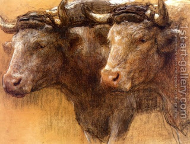

Bava Kamma 2 - Four Categories of Damages
There are four primary categories of damages, and all other cases can be classified as belonging to one of these: the ox, the pit, the man, and the fire.
Liability for one can not be deduced from the other. For example, a man is responsible in full for even accidental damage, while the owner of an ox is liable for half the damage the first three times; a fire isn't alive; and a pit doesn't move around.
However, since they can all damage, the owner is responsible to watch over them and to pay damages from the choicest land.